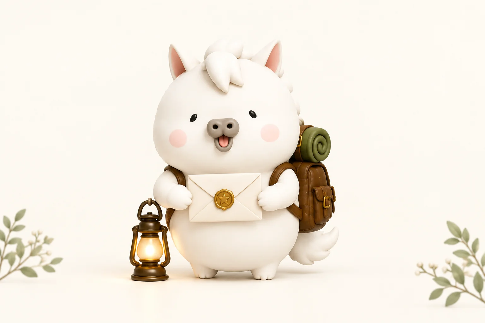

YOUR EVERYDAY, YOUR ADVENTURE
うまさんからの
挑戦状
2026. 10.1 ― 11.30
物語の主人公は、あなた。
見つけて、つくって、やってみて。
小さな一歩を、冒険の手帳に。

休んだ日があっても、冒険は消えない。
あなたの冒険手帳を、ここに。
同じ端末・同じブラウザーで遊んでね。記録が消える場合に備え、「冒険の書」を保存できます。プライベートブラウズでの継続利用は避けてください。
記録を読み込めませんでした
元の保存内容は上書きしていません。有効な冒険の書を読み込んで復元できます。
Lv.1
A LETTER FOR YOU
今日のクエスト
あなたのペースで、
小さな冒険を。
これまでの挑戦状
画像の提出・判定はありません。自分でできたと思ったらクリア。
公開済みのお題は後日でも挑戦できます。
MY ADVENTURE JOURNAL
冒険手帳
数値は分類ごとの達成ポイントです。上限は未確定です。
クリアした挑戦
星をつけたひとつを「いちばんの冒険」としてクリア画像に残せます。
冒険の書
写真を含まない、小さな記録の控え。
LITTLE ACHIEVEMENTS
集めたトロフィー
連続参加の条件はありません。61件の特別な実績は、本番61件の完成・達成後に解放されます。
THIS IS YOUR STORY
冒険のクリア画面
思い出を添える（任意・最大3枚）
写真なしでも完成するカードです。選んだ画像はこの画面だけで扱い、再読み込みすると消えます。サーバーへの送信やブラウザーへの永続保存はしません。
保存する画像を確認する
画像の長押しからも保存できます。
共有先に文章が入らない場合はコピーして添えてください。対応しない環境では画像保存＋投稿文コピーでシェアできます。公開予定のURLは、本番公開後に利用できます。